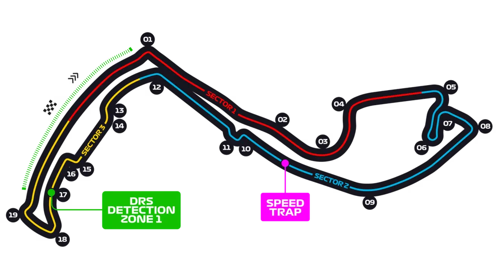
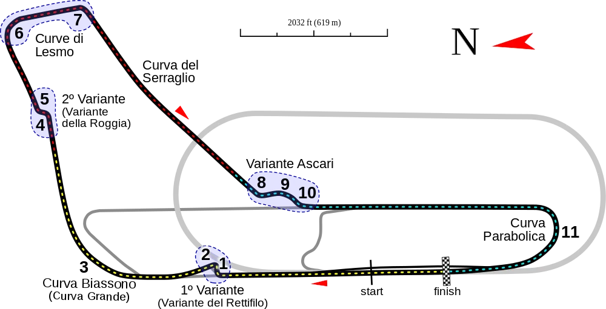
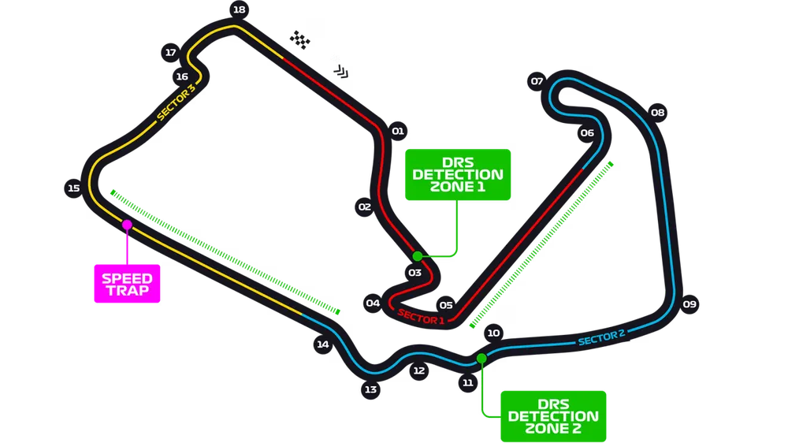
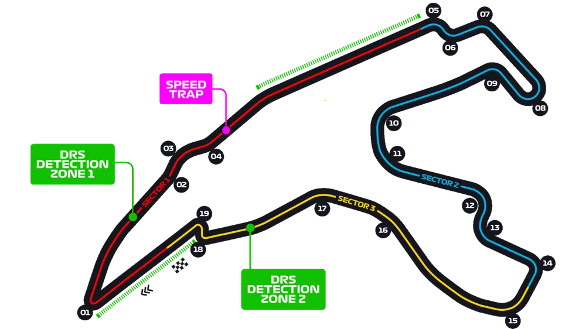

-
-
-
-
-
1. 모나코 서킷
모나코 서킷은 모나코 몬테 카를로에 위치한 레이싱 서킷이다.
흔히 '고풍적인 시가지 서킷' 하면 가장 먼저 떠오르는 클래식 시가지 서킷의 대표 주자로,
본래는 모나코 시내의 일반적인 도로이나 포뮬러 1이 열릴 때마다 통제하여 서킷으로서 사용된다.
모나코 그랑프리로 굉장히 유명한데, 포뮬러 1이 아직 출범하지 않았던 그랑프리 레이싱 시절의 1929년부터 경기를 개최해 온 유서 깊은 역사의 서킷으로,
몬차 서킷, 스파프랑코샹 서킷과 함께 현재의 F1에서 가장 오래된 서킷 중 하나이다.
그만큼 F1에서도 모나코 서킷을 굉장히 우대해 주는데, 사실 모나코 서킷은 FIA의 자동차 경주장 등급에 의거하면 1등급이 절대로 나올 수 없음에도
예외적인 사례로 인정받아 계속해서 F1을 개최하고 있다.

2. 이탈리아 몬차 서킷
이탈리아 몬차에서 개최하는 그랑프리이다.
스쿠데리아 페라리의 홈 그랑프리로 전 세계의 티포시들이 모인다.
페라리의 홈 그랑프리라는 특성 때문에 관객석은 붉은 물결의 티포시들로 가득 메워진다.
페라리의 경우, 이탈리아 그랑프리가 시즌의 절반이라고 할정도로, F1의 시즌 레이스 캘린더에서 매우 중요한 취급을 받는다.
좀 심하게 얘기하면 시즌 전체를 말아먹어도 이탈리아 그랑프리에서 우승한다면 현지 티포시들에게는 사랑을 받을 수도 있다.

3. 영국 실버스톤 서킷
영국 노스햄튼셔 주 실버스톤에 위치한 서킷.
1950년 FIA가 주관하는 포뮬러 1이 처음으로 개최된 곳이다. 서킷 길이는 5.901 km로 제법 길고, 코너 개수는 18개이다.
국립 몬차 자동차 경주장, 뉘르부르크링, 라 사르트 서킷, 스파프랑코샹 서킷 등과 어깨를 나란히 하는 유서깊은 서킷이며,
영국에서 개최되는 모터스포츠의 본산이라 할 수 있는 곳이다.
매년 포뮬러 1 영국 그랑프리, 모토 GP 영국 그랑프리 등 수많은 레이스가 이곳에서 펼쳐진다. 영국 드라이버 협회가 이 서킷을 소유하고 있다.

4, 벨기에 스파프랑코샹 서킷
벨기에의 스타벨로에 위치한 서킷. 서킷 길이 7.004 km.[15] 영국 실버스톤, 독일 뉘르부르크링, 이탈리아 몬차 서킷, 프랑스 라 사르트 서킷등과
어깨를 나란히 하는 매우 유서깊고 유명한 서킷이다. 또한 높은 평균속도를 자랑하는 초고속 서킷임에도 적절한 코너들이 잘 조합되어 드라이버들과
팬들에게 모두 많은 사랑을 받는 인기 많은 서킷. 매년 포뮬러 1 벨기에 그랑프리와 스파 24시, 스파 6시, 스파 1000 km 등의 내구 레이스가
이곳에서 펼쳐진다.
서킷 이름인 스파-프랑코샹은 서킷이 위치한 쓰따벨로의 북서쪽에 있는 도시인 스파의 이름과 서킷 인근의 동네 이름 프랑코샹을 합친 것이다.
